En Chispa Eterna creemos profundamente que cada alma posee una luz única y divina, incluso cuando las tormentas y desafíos de la vida la han cubierto temporalmente con miedos, dudas, fatiga o bloqueos energéticos.
Nuestro propósito y misión sagrada es acompañarte con total amor, cercanía y respeto en este sendero de reconexión. Te ayudamos a descifrar los mensajes ocultos en tus circunstancias actuales, sanar las cargas heredadas y restaurar tu armonía vibracional.
No tienes que recorrer este camino en soledad. La chispa del ser sigue viva dentro de ti. Nosotros te ayudamos a recordarla y encenderla.
"Tu transformación comienza cuando decides escucharte y abrir las puertas de tu templo interior."
— Shu Vedanta & Hadiya Meraya
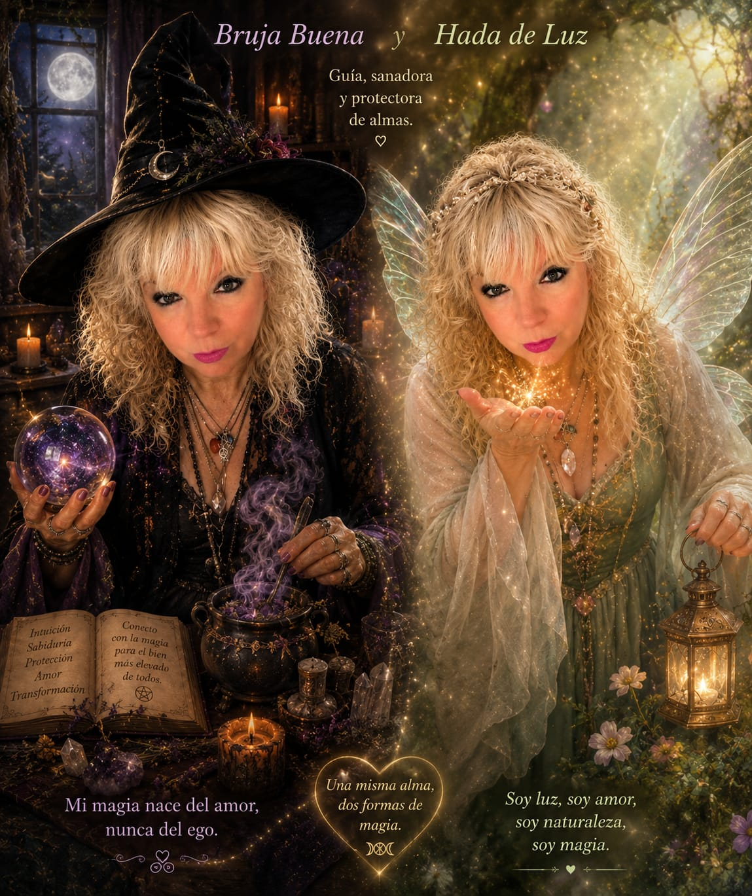
Hadiya Meraya
Bruja Buena, Hada de Luz y Chamana Mística
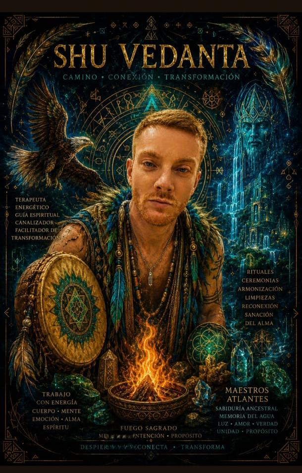
Shu Vedanta
Experiencias y Caminos
Tres portales de transformación y guía espiritual diseñados para tu evolución holística.
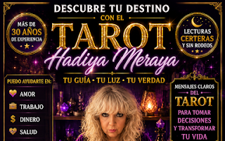
Lecturas Claras
Tarot Hadiya Meraya
Con más de 30 años de experiencia, Hadiya Meraya ofrece lecturas de tarot evolutivo e intuitivo sin rodeos. Una guía directa en el amor, trabajo, dinero y salud para tomar decisiones con máxima consciencia y transformar tu destino.
Un canal hacia los misterios de Isis, la intuición, la protección y el amor sagrado. Reconecta con tu poder de autosanación, la magia del renacimiento espiritual y la verdad profunda de tu alma a través del legado femenino de las sacerdotisas de la luz.
Un viaje profundo hacia tu esencia en plena naturaleza. Experimenta la danza libre (Ecstatic Dance), música consciente, terapia corporal y una conexión real con otros buscadores de luz en un espacio seguro de renovación energética y emocional.
Explora nuestras herramientas terapéuticas, oraculares y rituales energéticos personalizados para tu bienestar integral.
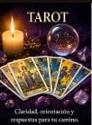
Tarot Evolutivo e Intuitivo
El tarot es una herramienta de autoconocimiento que nos ayuda a comprender situaciones presentes, patrones repetitivos y posibles caminos futuros. Más allá de la predicción, las cartas actúan como un espejo del alma, aportando claridad y orientación para tomar decisiones con mayor consciencia.
Leer detalles
Flores de Bach
Las Flores de Bach son esencias naturales que ayudan a armonizar estados emocionales como la ansiedad, el miedo, la tristeza, la inseguridad o el estrés. Cada fórmula se prepara de manera personalizada para acompañar tus procesos emocionales y favorecer un mayor equilibrio interno.
Leer detalles
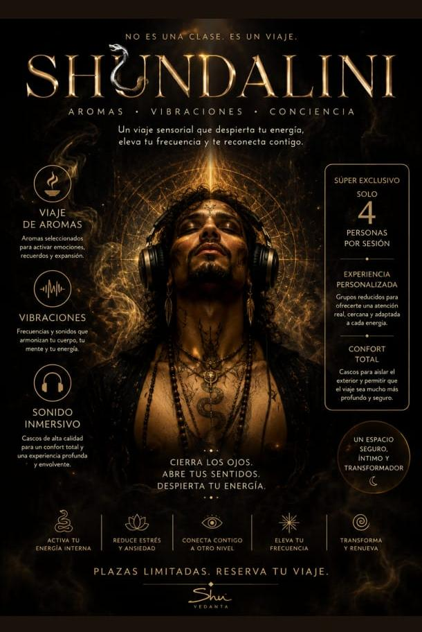
Shundalini
La Shundalini es una terapia energética enfocada en desbloquear y armonizar el flujo vital de la persona. A través de la canalización de energía se favorece la liberación de tensiones, bloqueos emocionales y cargas acumuladas, permitiendo una sensación de renovación y bienestar.
Leer detalles
Canalizaciones Espirituales
Las canalizaciones son un espacio de conexión profunda donde se reciben mensajes orientativos destinados a aportar comprensión, claridad y crecimiento personal. Muchas personas encuentran respuestas que les ayudan a comprender mejor los desafíos que están viviendo y el aprendizaje que estos contienen.
Leer detalles
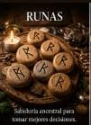
Runas
Las runas constituyen un antiguo sistema oracular cargado de simbolismo y sabiduría ancestral. Su consulta permite explorar situaciones desde una perspectiva profunda, obteniendo orientación sobre decisiones, relaciones, proyectos y procesos personales.
Leer detalles
Magia Gitana
La tradición gitana conserva conocimientos transmitidos durante generaciones relacionados con la protección, la armonización y la apertura de caminos. Este trabajo se realiza desde el respeto hacia una tradición espiritual rica en simbolismo, intención y conexión con la energía universal.
Leer detalles
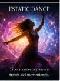
Ecstatic Dance
El Ecstatic Dance es una experiencia de movimiento libre que permite expresar emociones, liberar tensiones y reconectar con el cuerpo sin juicios ni estructuras. A través de la música y el movimiento espontáneo, se facilita una profunda liberación emocional y energética.
Leer detalles
Limpiezas Energéticas de Casas y Espacios
Los lugares también acumulan energías relacionadas con las experiencias vividas en ellos. Las limpiezas energéticas buscan armonizar viviendas, negocios y espacios de trabajo, favoreciendo una sensación de ligereza, bienestar y equilibrio armónico en el ambiente.
Leer detalles
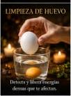
Limpieza con Huevo
La limpieza con huevo es una práctica tradicional utilizada para detectar y liberar cargas energéticas densas o acumuladas en el aura. Se trata de una técnica ancestral que muchas culturas han empleado como método de purificación, diagnóstico y renovación energética.
Leer detalles
Sanaciones Energéticas
Las sesiones de sanación energética tienen como objetivo favorecer la armonización de los distintos niveles de la persona: físico, emocional, mental y espiritual. Cada sesión se adapta a las necesidades particulares de quien la recibe, acompañando procesos de transmutación y paz interior.
Leer detalles
Limpieza Plus
La Limpieza Plus combina diferentes técnicas avanzadas de armonización energética con música y vibración sonora cuidadosamente seleccionadas para potenciar la experiencia. Es una sesión profunda orientada a liberar cargas persistentes, elevar la vibración personal y generar una renovación integral del ser.
Leer detalles
Rituales Personalizados
Cada situación requiere una atención específica e intencionada. Por ello diseñamos rituales personalizados adaptados a las necesidades y objetivos únicos de cada persona. Estos trabajos pueden orientarse hacia procesos de transmutación personal, protección, abundancia, armonía emocional o apertura de nuevos caminos de vida.
Leer detalles
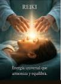
Reiki
El Reiki es una técnica de armonización energética de origen japonés que trabaja a través de la canalización de energía universal. Durante la sesión se busca favorecer la relajación profunda, reducir el estrés y ayudar al organismo a recuperar su equilibrio natural. Muchas personas experimentan una profunda paz, claridad mental y bienestar integral tras una sesión.
Leer detalles
Constelaciones Familiares
Las Constelaciones Familiares son una herramienta de exploración sistémica y personal que permite observar dinámicas, patrones ocultos y vínculos inconscientes que pueden estar influyendo limitando tu vida. A través de este trabajo se facilita una comprensión más amplia de situaciones de relaciones, abundancia, salud o bloqueos, abriendo nuevas vías de reconciliación.
Leer detalles
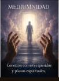
Mediumnidad
La mediumnidad es una práctica espiritual orientada a facilitar la conexión con seres queridos trascendidos y planos sutiles de la conciencia. Estas sesiones ofrecen un puente de mensajes, amor, consuelo y una perspectiva reconfortante sobre los procesos del alma y los vínculos eternos que continúan más allá de la materia.
Leer detalles
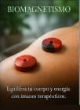
Biomagnetismo
El Biomagnetismo es una técnica complementaria y no invasiva que utiliza imanes de mediana intensidad en puntos específicos del cuerpo para favorecer el equilibrio del pH y el restablecimiento energético celular. Busca apoyar los procesos naturales de desintoxicación y autocuración del organismo.
Leer detalles
Registros Akáshicos
Los Registros Akáshicos son la gran biblioteca universal donde se guarda el aprendizaje y el recorrido evolutivo del alma. A través de su apertura, puedes explorar preguntas vitales sobre tu propósito de vida, lecciones kármicas, patrones repetitivos o talentos latentes, recibiendo guía de tus guías espirituales.
Leer detalles
Auriculoterapia
La Auriculoterapia es una técnica de la medicina tradicional oriental que consiste en la estimulación de puntos reflejos en la oreja para regular funciones físicas y emocionales. Es un apoyo sumamente eficaz para mitigar la ansiedad, el estrés, mejorar la calidad del sueño y facilitar la adopción de hábitos saludables.
Leer detalles
¿Por qué elegir Chispa Eterna?
Creamos un entorno de absoluta confianza para tu renacimiento espiritual.
Espacio Seguro y Ético
Entendemos que detrás de cada consulta hay una historia vulnerable. Ofrecemos un acompañamiento con total confidencialidad, empatía y libre de juicios.
Terapias Holísticas Reales
Combinamos conocimientos ancestrales del tarot, chamanismo y energía con métodos naturales como las Flores de Bach para tratar mente, cuerpo y alma de forma integral.
Experiencia Consagrada
Shu Vedanta & Hadiya Meraya aportan décadas de práctica, sintonía espiritual y compromiso real con el despertar colectivo del ser.
Da el primer paso
Reserva tu sesión y descubre qué mensaje, aprendizaje o cambio profundo está esperando llegar a tu vida en este preciso instante.
Ofrecemos sesiones presenciales y también online para que puedas realizar tu proceso desde cualquier lugar del mundo.
Aviso importante: Nuestros servicios tienen un carácter estrictamente espiritual, energético y de desarrollo y crecimiento personal. En ningún caso sustituyen, reemplazan ni equivalen a la atención médica, psicológica, psiquiátrica ni profesional competente cuando esta sea requerida para diagnosticar o tratar dolencias de salud.